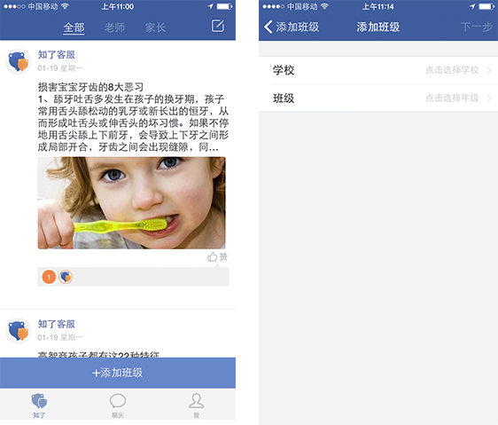
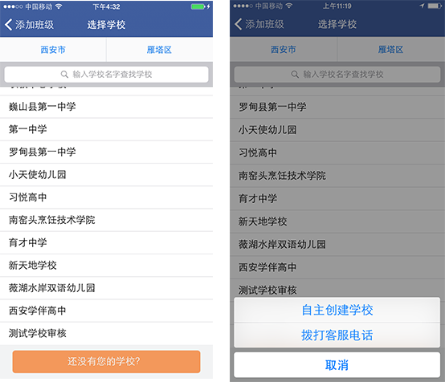
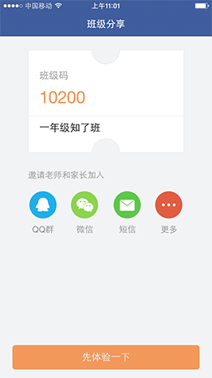

1、打开知了，点击下方“没有班级码 加入班级”进入加入班级页面，输入手机号，设置密码后点击“进入”。

2、允许软件向您发送4位短信验证码以验证您的手机号码。

3、输入接收到的4位短信验证码，通过短信验证后进入“知了”首页，点击“添加班级”，选择学校和班级后，点击“下一步”，进入角色选择。

注：如没有查找到孩子所在的学校和班级，可以点击“还没有您的学校？”，选择自主创建或者请客服帮您创建学校。

4、选择您的角色并完善信息，点击“完成”进入班级分享。在班级分享页面，您可以看到班级码，还可以通过微信、QQ、短信等方式邀请其他教师和家长加入。

5、点击“先体验一下”进入班级主页，查看班级状态。